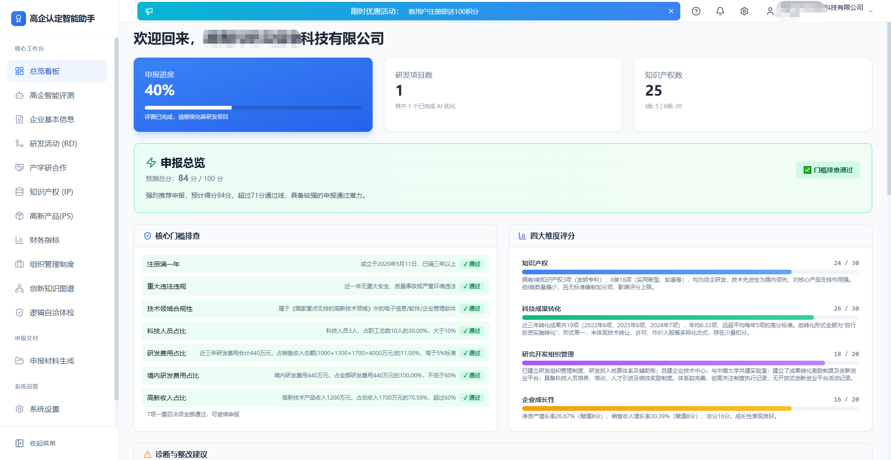
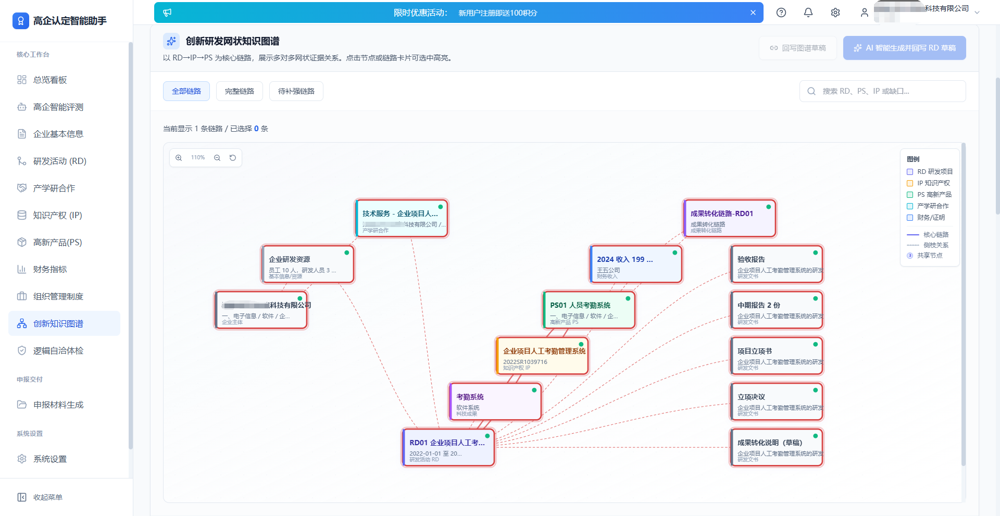
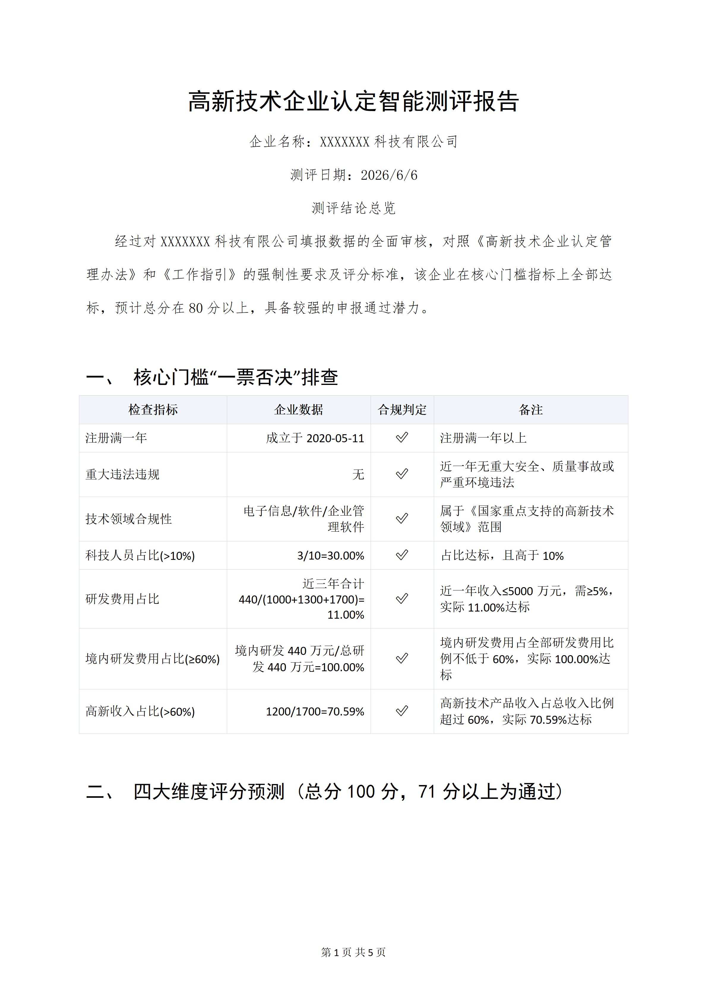
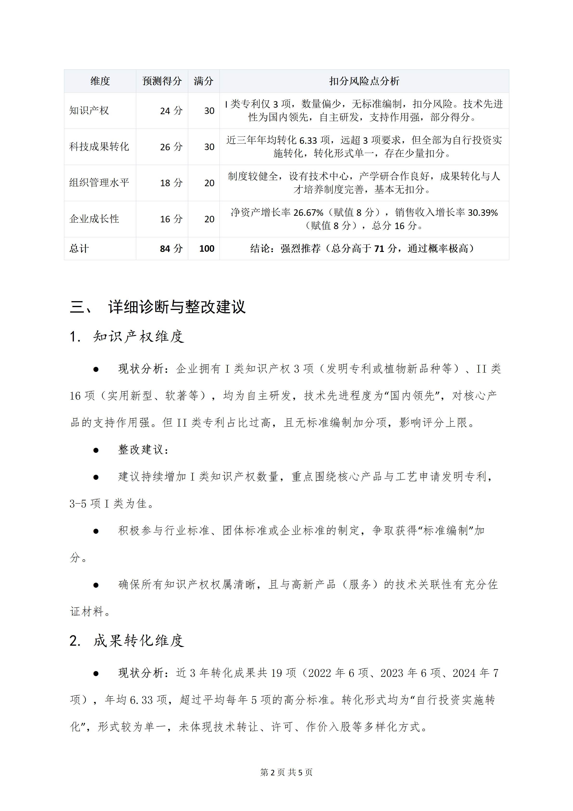
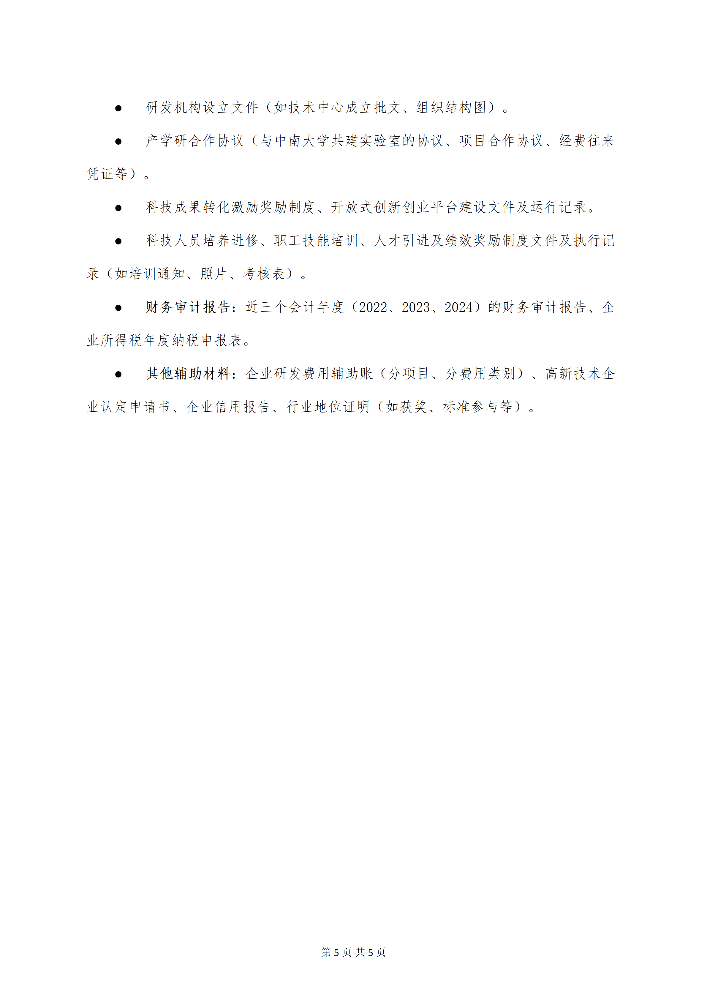
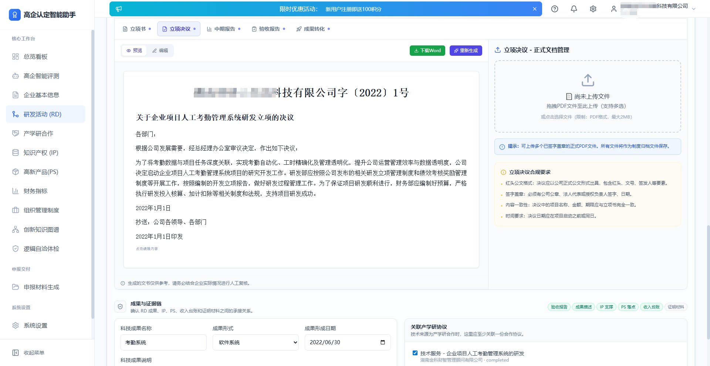
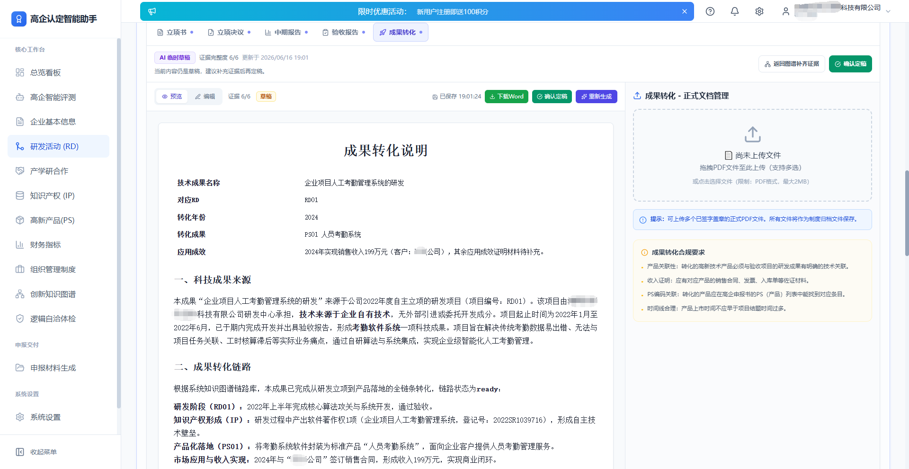
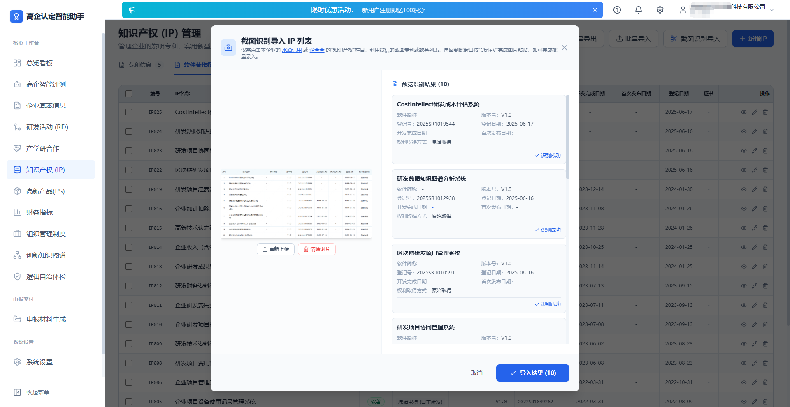
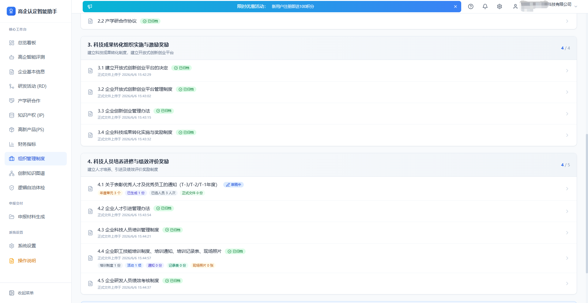

做高企认定还在手工拼材料？这款AI智能助手把申报周期压缩了70%

每年高企申报季，做项目申报的同行们大概都有过这种体验——
打开一个空白Word文档，开始逐项编写：立项报告、中期报告、验收报告、成果转化说明、研发管理制度……十几份文档，每份几千字。 写到第三份开始怀疑人生，写到第五份发现前后数据对不上，写到最后发现知识产权和研发项目根本关联不起来……
这还不是最要命的。最要命的是——
你花两个月整理的300页材料，专家评审时只用30分钟翻阅。 知识产权和研发项目对不上号、研发费用归集逻辑说不通、高新产品收入和审计报告打架……这些"硬伤"只要出现一处，整套材料的可信度就大打折扣。偏偏这些问题，往往提交前才被发现——改，来不及；不改，过不了。
一、高企认定材料到底有多"碎"？
高新技术企业认定，表面上看是"一套材料"，实际上涉及 四大评分维度、16项管理制度、11类证明文件：
| 维度 | 核心内容 | 材料数量 |
|---|---|---|
| 知识产权（≤30分） | 发明专利、实用新型、软著 | 15+项 |
| 科技成果转化（≤30分） | RD项目全套文书、PS产品说明 | 每个项目5-8份 |
| 研发组织管理（≤20分） | 16项管理制度及执行证明 | 20+份 |
| 企业成长性（≤20分） | 三年财务数据、审计报告 | 10+份 |
一个完整的高企申报材料包，轻则300页，重则600页以上。
而且这些材料不是孤立的——知识产权要支撑研发项目，研发项目要对应高新技术产品，产品要有销售证据，财务数据要把所有费用归集清楚。任何一个环节出错，都可能导致评审扣分甚至一票否决。
传统做法是什么？Excel表格管理 + Word手动编写 + 人工核对逻辑。一套下来，熟练的服务机构也要 2-4周，不熟练的企业自己摸索，1-2个月都是常事。
二、我们做了一个智能助手
陈恩团队花了很长时间研究高企认定的全流程痛点，结合AI大模型能力，开发了一款 「高企认定智能助手」桌面端软件。
先看几张系统截图：



三、它能做什么？
🔍 第一件事：先给你做个"体检"
很多企业一上来就闷头准备材料，准备到一半才发现——科技人员占比不够、研发费用比例不够、高新产品收入不达标……
智能评测功能就是解决这个问题的。输入企业基本数据后，系统会自动进行：
- • ✅ 7项一票否决条件逐一检查（成立年限、知识产权数量、研发费用占比等）
- • 📊 四大维度智能评分（知识产权、科技成果转化、组织管理水平、企业成长性）
- • 🎯 精准诊断建议（明确告诉你哪项薄弱、差多少、怎么补）
▼ 高企测评报告（共5页）— 核心门槛排查 + 四维评分预测 + 改进建议，一键导出Word：





📝 第二件事：AI帮你写材料
这是整个系统最核心的能力。传统做法需要人工编写的文档，现在都可以 AI一键生成：
研发项目管理（RD）：
正向立项或逆向推理两种模式：
- • 正向立项：填写项目基本信息 → 归集研发资源 → AI生成立项书
- • 逆向推理（推荐）：已有知识产权 → AI反推研发项目 → 自动生成立项方案
五阶段文书体系全覆盖：
- 1. 立项报告 + 立项决议
- 2. 中期报告（支持多阶段）
- 3. 验收报告
- 4. 成果转化报告
▼ 研发活动管理 — AI辅助正向立项/逆向推理，五阶段文书全覆盖：






知识产权管理（IP）：
三种录入方式任选：
- • 单条手动录入
- • Excel批量导入（支持从企查查/水滴信用下载）
- • OCR截图识别（直接截取网页图片粘贴识别，每条仅2积分）
▼ 知识产权管理 — 一键编号/批量导出/批量导入/OCR截图识别：



高新技术产品（PS）：
填写产品基本信息后，AI自动生成：
- • 关键技术及主要技术指标（400字以内）
- • 与同类产品的竞争优势
- • 知识产权支撑作用说明
组织管理制度（16项全覆盖）：
| 分类 | 制度数量 | 示例 |
|---|---|---|
| 研发管理制度 | 5项 | 研发组织制度、核算体系、项目管理制度等 |
| 技术中心&产学研 | 2项 | 技术中心成立文件、产学研合作协议 |
| 创新平台制度 | 4项 | 开放式创新创业平台制度、科技成果转化奖励制度 |
| 人才&考核制度 | 5项 | 人才引进办法、培训管理制度、绩效考核制度等 |
每一项都可以AI一键生成，基于企业真实情况定制，不是通用模板！
▼ 组织管理制度 — 四大类共16项制度，卡片式布局，一键生成+下载：


🔗 第三件事：帮你查逻辑漏洞
材料写得再漂亮，如果 前后矛盾、数据打架、证据链断裂，一样会被专家质疑。
系统的 「逻辑自洽体检」 功能会做三件事：
- • 🔍 快速检测：各模块数据完整性、一致性检查
- • 🧠 深度分析：AI分析研发项目与IP的关联性、产品与技术的匹配度、财务数据合理性
- • 🎯 优先修复：按严重程度排序，告诉你先改哪个

🌐 第四件事：产学研合同也能AI起草
选择关联的研发项目 → 系统读取立项报告内容 → AI根据技术方案生成标准技术合同 → 下载签字盖章上传。
合同的技术内容严格基于立项报告展开，确保前后一致。（消耗10积分）
四、为什么做这个？
陈恩团队的理念很简单—— 让AI处理重复劳动，让人专注专业判断。
高企认定这件事，真正的专业价值在于对企业技术路线的梳理、对政策要求的准确把握、对评审逻辑的深入理解，而不是在一遍一遍地复制粘贴、排版格式、核对这些机械性工作上消耗时间。
我们做这个系统，就是为了把这些机械性工作交给AI：
| 对比项 | 传统做法 | 使用智能助手 |
|---|---|---|
| 材料编写 | 2-4周人工编写 | 1-3天AI生成 |
| 数据核对 | 逐项人工比对 | 系统自动体检 |
| 逻辑一致性 | 经验依赖，容易遗漏 | AI全方位交叉验证 |
| 多企业管理 | 混乱，容易串数据 | 多企业独立存储 |
| 数据安全 | 云端工具存在泄露风险 | 全部本地存储 |
特别强调：所有数据保存在本地电脑，不会上传到云端。 这一点对于重视信息安全的企业和同时服务多个客户的服务机构来说，至关重要。
适用对象：
- • ✅ 科技型中小企业：自己动手完成高企申报，省去数万元的服务费
- • ✅ 科技服务机构：提升服务效率，一个人能同时服务更多客户
- • ✅ 财税代理机构：拓展高企申报业务，降低专业门槛
怎么用？
- 1. 下载安装桌面端软件（Windows 10/11）
- 2. 手机号注册，绑定企业信息
- 3. 配置AI模型（硅基流动平台，新用户送16元代金券）
- 4. 开始使用（新用户赠送100积分，足够基础体验）
积分与套餐：
| 套餐 | 价格 | 积分 | 适合场景 |
|---|---|---|---|
| 体验包 | ¥999 | 333积分 | 初次体验、培训引流 |
| 起步包 | ¥2,999 | 1,000积分 | 小微团队 |
| 专业包（推荐⭐） | ¥4,999 | 2,000积分 | 中小企业完整申报 |
| 旗舰包 | ¥8,999 | 4,000积分 | 中大型企业、多项目 |
| 企业定制 | 面议 | 按需定制 | 私有化部署 |
积分不过期，用完可随时续费。
高企认定智能助手已正式发布，欢迎下载体验！
→ 下载地址：https://drive.weixin.qq.com/s?k=AJwA-wdLAF4CUVbktZ
→ 操作问题：查看完整《操作说明书》（https://drive.weixin.qq.com/s?k=AJwA-wdLAF4M3PyotC）或联系客服获取帮助
免责声明：
- 1. 本软件为辅助工具，生成的材料仅供参考，请根据企业实际情况修改完善后使用。
- 2. 高企认定结果以主管部门评审为准，本软件不对认定结果做出任何承诺。
- 3. AI生成内容可能存在偏差，重要材料建议经专业人员审核后使用。
- 4. 积分规则和套餐价格如有调整，以软件内最新显示为准。
- 5. 数据隐私说明： 本软件所有企业数据、申报材料、财务数据均保存在用户本地电脑，不会上传至任何云端服务器。AI模型调用仅发送必要的生成指令，不传输完整企业资料。